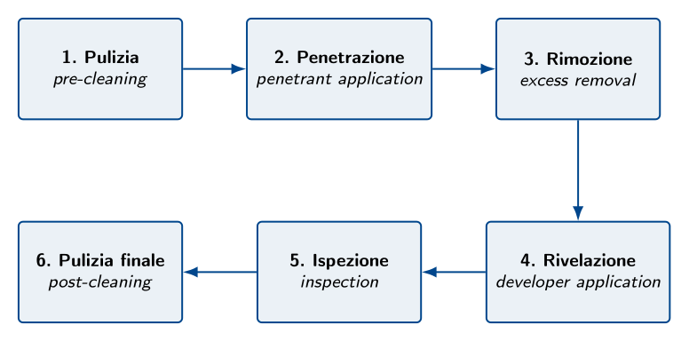
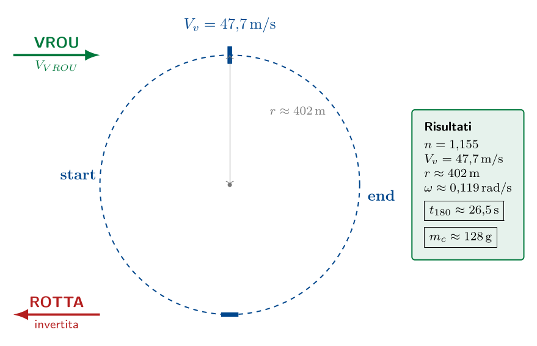
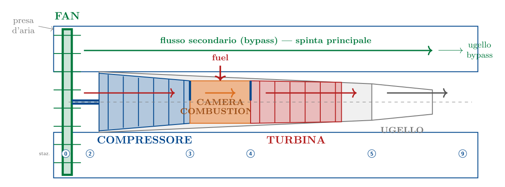
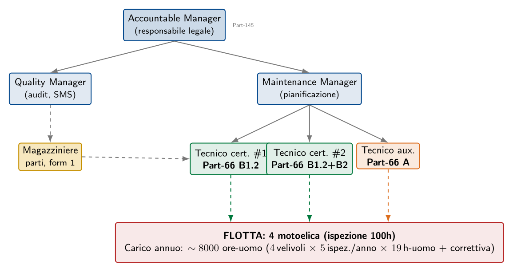

Esame di Stato 2025
Esame di Stato 2025
La prova del 2025 si articola in una Prima parte dedicata al dimensionamento di un motoelica con struttura alare bilongherone a sezione rettangolare cava, e in una Seconda parte comprendente quattro quesiti, fra i quali il candidato deve sceglierne due. In quest'opuscoletto, per completezza didattica, vengono trattati tutti e quattro: il primo è una prova non distruttiva (CND con liquidi penetranti), il secondo un esercizio numerico di virata corretta a $C_L$ costante, il terzo l'analisi del funzionamento del motore turbofan, e il quarto un'organizzazione della manutenzione di secondo livello. Le risposte fanno riferimento al velivolo della Prima parte: motoelica con $W_{TO} = 5000\,\mathrm{N}$, apertura alare 11 m, ala trapezoidale (corda alla radice 1,4 m, all'estremità 1,1 m), profilo NACA 0010, $n_{lim} = 4{,}4$ (categoria Utility CS-23).
Controllo CND con liquidi penetranti
Il Controllo Non Distruttivo (CND, in inglese NDT) con liquidi penetranti è una delle PND più diffuse in campo aeronautico, in quanto permette di rilevare discontinuità superficiali aperte (cricche, porosità, ripiegature) su qualsiasi materiale non poroso, con un'apparecchiatura economica e una procedura applicabile anche in situ sul velivolo.
Apparecchiatura e materiali
- sgrassante/detergente per la pulizia preliminare;
- liquido penetrante a contrasto cromatico (rosso) o fluorescente;
- rimuovente (acqua, solvente o emulsificante);
- rivelatore (polvere bianca a base di talco);
- lampada di Wood (UV) per i penetranti fluorescenti;
- attrezzatura di pulizia finale e materiali di documentazione.
Procedimento operativo
Il controllo si articola nelle sei fasi schematizzate nella figura seguente, identiche a quelle descritte in dettaglio al paragrafo §sec:20xx-cap7-q4 del Capitolo §cap:esame20xx.

Fase 1 — Pulizia preliminare.
La superficie viene sgrassata con solvente. Una pulizia inadeguata è la causa più frequente di falsi negativi.Fase 2 — Applicazione del penetrante.
Per immersione, spruzzo o pennellatura. Tempo di permanenza tipico: 15–30 min, durante il quale la capillarità fa penetrare il liquido nelle discontinuità.Fase 3 — Rimozione dell'eccesso.
Eseguita in modo da rimuovere il solo penetrante superficiale, lasciando intatto quello intrappolato nelle cricche.Fase 4 — Applicazione del rivelatore.
Strato sottile e uniforme di polvere bianca o sospensione spray. Per capillarità inversa il penetrante intrappolato risale in superficie generando un'indicazione visibile, di forma e dimensioni amplificate. Tempo di azione: 5–15 min.Fase 5 — Ispezione.
Con luce visibile (1000 lx) per i penetranti rossi, con lampada di Wood in cabina oscurata per i fluorescenti. Le indicazioni vengono classificate per forma:- lineari (lunghezza $\ge 3 \times$ larghezza): cricche, ripiegature;
- rotondeggianti: porosità, soffiature;
- diffuse: difetti generalizzati o problemi di pulizia.
Fase 6 — Pulizia finale.
Rimozione di ogni residuo di rivelatore e penetrante, che potrebbero innescare corrosione. Si redige il rapporto di prova con identificativo del pezzo, prodotti utilizzati, indicazioni rilevate (con fotografie) e giudizio di accettabilità.Caso applicativo sul velivolo della Prima parte
Per il motoelica della Prima parte, una zona critica per il controllo con liquidi penetranti è l'attacco della semiala alla fusoliera: in particolare i fittings di attacco dei longheroni, che concentrano i carichi di flessione (con $n_{lim} = 4{,}4$ in categoria Utility) e sono soggetti a fatica per il numero elevato di cicli decollo-atterraggio. Un'ispezione PT ogni 500 ore di volo permette di intercettare l'innesco di cricche di fatica prima che si propaghino fino a dimensioni critiche.
Virata corretta a $C_L$ costante: tempo di inversione e consumo
Dati di partenza e ipotesi
Analisi della virata
Passo 1 — Fattore di carico.
$$n = \frac{1}{\cos\theta} = \frac{1}{\cos 30°} = \frac{1}{0{,}866} \approx 1{,}155$$ Il valore $n = 1{,}155$ è ben al di sotto di $n_{lim} = 4{,}4$: la virata è strutturalmente sicura.Passo 2 — Velocità di virata.
A $C_L$ costante (assetto invariato) la portanza, che deve aumentare di un fattore $n$, si ottiene aumentando la velocità nel rapporto $\sqrt{n}$: $$V_v = V_{VROU} \cdot \sqrt{n} = 44{,}4 \cdot \sqrt{1{,}155} \approx 47{,}7\,\mathrm{m/s} \quad (172\,\mathrm{km/h})$$Passo 3 — Raggio di virata.
Dalla relazione fra velocità, raggio e angolo di bank ($\frac{V_v^2}{g\,r} = \tan\theta$): $$r = \frac{V_v^2}{g \cdot \tan\theta} = \frac{47{,}7^2}{9{,}81 \cdot \tan 30°} = \frac{2275{,}3}{9{,}81 \cdot 0{,}5774} \approx 401{,}7\,\mathrm{m}$$Passo 4 — Velocità angolare e tempo per invertire la rotta.
La velocità angolare (rateo di virata) è: $$\omega = \frac{V_v}{r} = \frac{47{,}7}{401{,}7} \approx 0{,}1188\,\mathrm{radian/s}$$ Per invertire la rotta il velivolo deve descrivere un angolo di $\pi$ rad (180 °): $$\boxed{\,t_{180} = \frac{\pi}{\omega} = \frac{\pi}{0{,}1188} \approx 26{,}5\,\mathrm{s}\,}$$Calcolo del consumo di carburante
Passo 5 — Potenza in virata.
In virata corretta a $C_L$ costante la velocità aumenta da $V_{VROU}$ a $V_v = V_{VROU}\sqrt{n}$. La resistenza aerodinamica $D = qSC_D$ aumenta in proporzione a $V^2$, quindi di un fattore $n$. La potenza necessaria $P_n = D \cdot V$ aumenta di un fattore $n \cdot \sqrt{n} = n^{3/2}$: $$P_v = P_{cr} \cdot n^{3/2} = 50 \cdot 1{,}155^{3/2} = 50 \cdot 1{,}241 \approx 62{,}1\,\mathrm{kW}$$Passo 6 — Consumo orario in virata.
$$\dot{m}_c = c_{sf} \cdot P_v = 0{,}28 \cdot 62{,}1 \approx 17{,}4\,\mathrm{kg/h}$$Passo 7 — Consumo per la manovra di inversione.
$$m_c = \dot{m}_c \cdot t_{180} = 17{,}4 \cdot \frac{26{,}5}{3600}$$ $$\boxed{\,m_c \approx 0{,}128\,\mathrm{kg} \quad (128\,\mathrm{g}) \quad\text{ovvero}\quad V_c \approx 0{,}18\,\mathrm{L}\,}$$Sintesi visuale della virata

Funzionamento del motore turbofan
Architettura del motore
Il turbofan è organizzato in due flussi d'aria coassiali:
- Flusso primario (caldo)
- L'aria entra nel compressore (di bassa e alta pressione, multistadio assiale), viene compressa fino a $p_2 \approx 30$–$50$ volte la pressione atmosferica, attraversa la camera di combustione dove brucia con il combustibile (cherosene Jet A-1) raggiungendo temperature di $1500\,\mathrm{K}$–$1800\,\mathrm{K}$, espande in turbina (alta e bassa pressione) generando la potenza meccanica per azionare compressore e fan, infine si scarica nell'ugello primario producendo una piccola spinta residua.
- Flusso secondario (freddo)
- Una grande portata d'aria viene aspirata e accelerata dal fan, una ventola di grande diametro posta all'imbocco del motore, e fluisce esternamente al nocciolo (bypass duct) verso un proprio ugello secondario (o si miscela con il flusso primario in un mixer). Questa è la sorgente di gran lunga prevalente della spinta complessiva (60–85% nei turbofan moderni).
Le cinque stazioni del ciclo

Le stazioni convenzionali del ciclo sono:
- Stazione 0: condizioni atmosferiche indisturbate (a monte del motore);
- Stazione 2: ingresso compressore (dopo presa d'aria e fan);
- Stazione 3: uscita compressore = ingresso camera di combustione;
- Stazione 4: uscita camera = ingresso turbina (temperatura massima del ciclo);
- Stazione 5: uscita turbina = ingresso ugello primario;
- Stazione 9: uscita ugello (getto).
Il rapporto di by-pass (Bypass Ratio
, BPR)Il parametro fondamentale che caratterizza un turbofan è il rapporto di by-pass, definito come: $$\mathit{BPR} = \frac{\dot{m}_{a,\text{secondaria}}}{\dot{m}_{a,\text{primaria}}}$$ ovvero il rapporto fra la portata d'aria che attraversa il bypass duct e quella che attraversa il nocciolo. Si distinguono tre famiglie di turbofan:
| Tipologia | BPR | Caratteristiche | Esempi |
| Low-bypass | 0{,}3–2 | Postcombustore frequente; getto ad alta velocità; alte prestazioni a velocità elevate. | Eurofighter (EJ200), F-16 (F100) |
| Medium-bypass | 2–5 | Architettura mista; primi turbofan civili. | Concorde (Olympus), Boeing 707 (JT3D) |
| High-bypass | 5–12 | Massimo rendimento propulsivo subsonico; maggior parte degli airliner moderni. | A320 (CFM56), 747 (CF6), 787 (Trent 1000) |
| Ultra-high-bypass | $> 12$ | Tendenza più recente; geared turbofan con riduttore. | A220 (PW1500G), A320neo (LEAP-1A) |
Vantaggi del turbofan rispetto al turbogetto semplice
Il turbofan è diventato lo standard dei velivoli da trasporto perché, rispetto al turbogetto semplice, offre vantaggi decisivi:
- Maggior rendimento propulsivo: il rendimento propulsivo $\eta_p = 2V_0/(u_e + V_0)$ è massimo quando la velocità del getto $u_e$ è poco superiore alla velocità di volo $V_0$. Il turbofan, accelerando moderatamente una grande portata d'aria, raggiunge $\eta_p \approx 0{,}65$–$0{,}75$, contro lo $0{,}40$–$0{,}50$ tipico del turbogetto.
- Consumo specifico inferiore: come conseguenza del maggior rendimento propulsivo, il consumo orario per unità di spinta (TSFC, Thrust Specific Fuel Consumption) è di circa il 30–40% più basso rispetto al turbogetto.
- Rumorosità ridotta: il flusso secondario, a velocità più bassa, abbassa l'intensità del rumore del getto (proporzionale alla potenza ottava della velocità del getto). Inoltre il flusso freddo schiacchera il getto caldo riducendone la turbolenza.
- Migliori prestazioni di salita e decollo: a basse velocità il turbofan fornisce maggior spinta del turbogetto pari potenza, perché il fan è efficace anche a bassa velocità.
Limiti del turbofan
- Velocità di volo subsonica: oltre $M \approx 0{,}9$ il rendimento del fan crolla per la formazione di onde d'urto sulle pale. I velivoli supersonici utilizzano turbofan a basso BPR con postcombustore, oppure turbogetti puri.
- Diametro frontale elevato: il fan di grandi dimensioni richiede ampi nacelle che aumentano la resistenza aerodinamica. Sui velivoli a doppio motore questo è un compromesso accettabile per i benefici sui consumi.
- Complessità meccanica: l'asse a doppio o triplo flusso, i sistemi di controllo del fan e (nei geared turbofan) il riduttore aggiungono peso e costi di manutenzione.
Manutenzione di 2° livello: organizzazione, personale, tasks e tempi
Ipotesi di partenza
Organizzazione del personale
L'organizzazione minima di un'officina Part-145 di secondo livello prevede le seguenti figure professionali, con qualifiche attestate da licenza Part-66 (per il personale tecnico) e da approvazioni interne all'organizzazione (per i ruoli gestionali).
| lcXc@{}}
Ruolo | Qualifica | Compiti principali | N. unità |
| Accountable Manager | — | Responsabile legale dell'organizzazione verso ENAC/EASA. | 1 |
| Quality Manager | Esperienza Part-145 | Audit interni, monitoraggio conformità ai regolamenti, gestione SMS. | 1 |
| Maintenance Manager | Part-66 + esperienza | Pianificazione interventi, supervisione tecnica, allocazione risorse. | 1 |
| Tecnico certificatore | Part-66 cat. B1.2 (motoelica) e B2 (avionica) | Esegue manutenzione, ispeziona, firma il rilascio (CRS, Certificate of Release to Service) al termine dell'intervento. | 2 |
| Tecnico ausiliario | Part-66 cat. A | Esegue task semplici sotto supervisione (sostituzione olio, filtri, candele); non firma il CRS. | 1 |
| Magazziniere | — | Gestione parti di ricambio, tracciabilità (form 1 EASA), inventario. | 1 |
Categorie di licenza Part-66
La licenza Part-66 attesta le competenze tecniche del personale di manutenzione ed è articolata in quattro categorie:
- Categoria A
- Manutenzione di linea minore e correzione di anomalie semplici. Non firma il CRS per ispezioni complete.
- Categoria B1
- Manutenzione strutturale, motori, sistemi meccanici, elettrici. Sottocategorie: B1.1 (turbomotori), B1.2 (motori alternativi), B1.3 (rotor), B1.4 (alianti).
- Categoria B2
- Avionica (sistemi elettrici/elettronici).
- Categoria C
- Manutenzione di base (interventi maggiori in hangar). Per certificare un C-check è necessaria la qualifica C, che richiede una significativa esperienza pregressa.
Per la flotta ipotizzata (motoelica leggeri) la qualifica appropriata per i tecnici certificatori è B1.2 + B2 combinata.
Tasks manutentivi e tempi
L'ispezione 100 ore è il riferimento tipico della manutenzione di 2° livello sui velivoli da turismo e si articola nei task elencati nella tabella seguente. I tempi sono espressi in ore-uomo (man-hours) e fanno riferimento a un singolo velivolo della classe ipotizzata.
\setlength{\tabcolsep}{4pt}
| >{\arraybackslash}p{0.4cm}p{1.5cm}X>{\arraybackslash}p{0.85cm}>{\arraybackslash}p{1.55cm}@{}}
N. | Sistema | Task manutentivi | Tempo | Qualifica |
| 1 | Doc. | Verifica giornale di bordo, libretti, ARC; pianificazione intervento. | 0,5 h | B1.2 |
| 2 | Cellula | Lavaggio esterno, ispezione visiva di rivetti, lamiere, parabrezza, vernice. | 2,0 h | A |
| 3 | Cellula | Apertura pannelli ispettivi, controllo serraggio bulloni di forza. | 1,5 h | B1.2 |
| 4 | Motore | Sostituzione olio (drenaggio, filtro, riempimento). | 1,0 h | A / B1.2 |
| 5 | Motore | Controllo compressione cilindri (tutti e 4) con compression tester. | 1,5 h | B1.2 |
| 6 | Motore | Ispezione e sostituzione candele, magneti (se previsto). | 1,5 h | B1.2 |
| 7 | Motore | Ispezione filtri aria e benzina, gascolator, drain valves. | 0,5 h | A |
| 8 | Elica | Ispezione bordi pale per nicks/cricche, controllo serraggio mozzo, lubrificazione. | 1,0 h | B1.2 |
| 9 | Carrello | Controllo pressione ammortizzatori, freni, pneumatici; lubrificazione perni. | 1,5 h | B1.2 |
| 10 | Comandi di volo | Ispezione cavi, pulegge, tensioni; prova escursione. | 1,5 h | B1.2 |
| 11 | Imp.\ elettrico | Controllo batteria, tensione di carica, alternatore, fusibili, CB. | 1,0 h | B2 |
| 12 | Avionica | BIT degli strumenti, prova radio VHF, transponder, GPS. | 1,0 h | B2 |
| 13 | Imp.\ combust. | Controllo serbatoi, sfiati, sonde di livello, drain water. | 1,0 h | B1.2 |
| 14 | PND | Ispezione PT su attacchi longheroni e perni di cerniera. | 2,0 h | B1.2 + liv.\ II |
| 15 | Prove finali | Ground run-up motore, prova magneti, lettura parametri, prove pre-flight. | 1,0 h | B1.2 |
| 16 | Doc. | Compilazione rapporti, aggiornamento libretti, firma CRS. | 1,0 h | B1.2 |
| \multicolumn{3}{r}{Totale ore-uomo} | 19,0 |
Distribuzione del lavoro nel tempo solare.
Con l'organizzazione descritta (2 tecnici certificatori + 1 ausiliario operanti in parallelo), le 19 ore-uomo si distribuiscono in circa \textbf{1{,}5–2 giorni lavorativi}. Il velivolo può quindi essere riconsegnato in servizio entro 48 ore dalla presa in carico, salvo necessità di parti di ricambio non a magazzino.Schema organizzativo

Documentazione di output
Al termine dell'intervento, l'organizzazione produce:
- CRS (Certificate of Release to Service): firma del tecnico certificatore che attesta la riconsegna in servizio del velivolo.
- Work Report: dettaglio dei task eseguiti, parti sostituite (con numero seriale), ore-uomo impiegate, prove eseguite.
- Aggiornamento del libretto del velivolo e dei libretti dei componenti tracciati (motore, elica).
- Notifica al CAMO (gestore dell'aeronavigabilità continua) per l'aggiornamento del programma di manutenzione del velivolo.